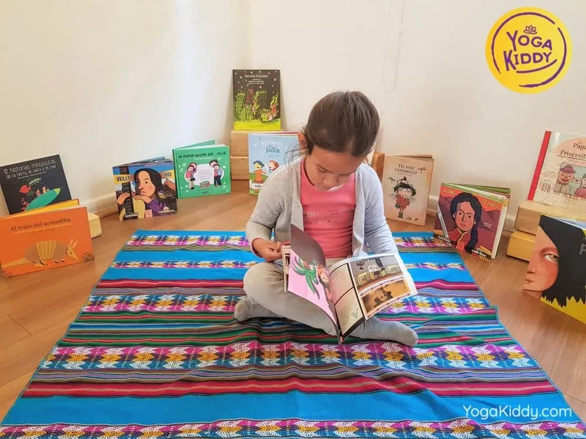

Una serie de pasos que han sido recorridos con provecho por muchos exploradores espirituales.
“Los ocho pasos del yoga” (u ocho escalones o ramas) se atribuyen tradicionalmente a Patanjali, yogui del siglo III de nuestra era, y es considerado el texto fundacional del yoga. Como en una escalera, cada estancia del sendero prepara al cuerpo y a la mente para la iluminación.
- Yama: Conducta hacia los demás.
- Niyama: Conducta hacia ti mismo.
- Asana: Postura física.
- Pranayama: Respiración.
- Pratyhara: Atención hacia adentro.
- Dharana: Concentración
- Dhyana: Meditación.
- Samadhi: Liberación, Iluminación.
Es posible simplificar los yoga sutras de Patanjali sin subestimar la capacidad de aprendizaje de los niños y niñas. Sólo hace falta el uso ejemplos y situaciones de la vida cotidiana, así ellos y ellos aprenden de una forma más significativa y podemos permitir que se sientan más atraídos hacia esta filosofía.
Una manera muy efectiva, es el uso de cuentos para promover cada uno de los pasos para comprender el camino de esta disciplina. Según nuestros intereses, podemos comenzar a abordar los cuentos desde el peldaño que más nos acomode y luego ir integrando varios de ellos para así ofrecer el arte de contar como una experiencia holística para atender al ser en totalidad. Si bien la idea es siempre sostener esta labor integrada, sabiendo que en todo tipo de cuentos podemos encontrarnos con estos pasos, reconociendo nuestro poder de amplificar la mirada, es importante comenzar a sistematizar para poder identificar e incorporarlos de manera más clara y consciente.
Ejemplos de Cuentos para el abordaje de Yogas sutras.
Niyama (Conducta hacia tí mismo)
Cuento La rana sorda.
La rana sorda. Fábula para niños sobre la motivación
Pranayama (Respiración)
Cuento Respira. Inés Castel-Branco
Dharana (Concentración)
Fábula El asno y el lobo. Esopo.
El asno y el lobo. Fábula de Esopo sobre la falta de concentración
Asana (Posturas físicas)
La lechuza y la Mariposa. Cayetana Rodenas.
Cuentos para Yoga/ La lechuza y la mariposa
Peggysue.S.S